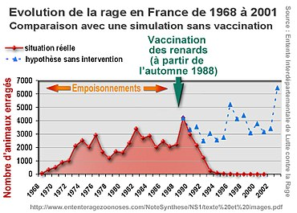

Les symptomes
L’humain infecté par le virus de la rage présente d’abord des signes et des symptômes généraux :
La rage est l’une des plus graves maladies transmissibles aux humains, Ce virus se transmet généralement par la salive d’un animal domestique ou sauvage infecté lors d’une morsure . La rage est responsable d'environ 59 000 décès annuels dans le monde, principalement en Asie et en Afrique, le plus souvent suite à une morsure par un chien enragé. Chaque année, environ 17 millions de personnes reçoivent un traitement après exposition à des animaux chez lesquels on soupçonne la rage.

L’humain infecté par le virus de la rage présente d’abord des signes et des symptômes généraux :
Ce virus est transmis à l'homme essentiellement par une morsure ou une griffure animale provenant d'un animal infecté qui va le transmettre via la salive.
L'animal constitue le réservoir naturel du virus de la rage.

Les personnes qui risquent d'etre attaques sont :
Alors que le monde entier espère un vaccin contre le coronavirus, voici comment Louis Pasteur a développé le premier vaccin, celui contre la rage, en 1885
La vaccination préventive contre la rage consiste en l’administration par voie intramusculaire de 3 doses de vaccin sur une période de 3 à 4 semaines (aux jours 0, 7, 21 ou 28). Le vaccin est administré de préférence au niveau du bras, dans le muscle deltoïde.
 Il est fortement conseillé de procéder à la vaccination dans les 24 heures après une morsure suspecte, surtout si une vaccination préventive n’a pas été réalisée.
Il est fortement conseillé de procéder à la vaccination dans les 24 heures après une morsure suspecte, surtout si une vaccination préventive n’a pas été réalisée.